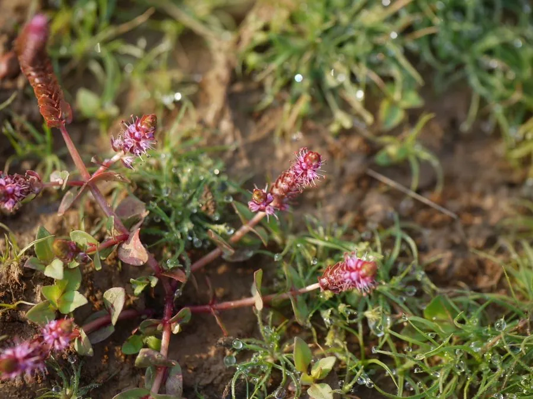

水生植物 · 植物界
红蝴蝶 Rotala macrandra

千屈菜科多年生水生草本，叶对生圆阔、强光下呈鲜红色，原产印度，是水草造景中最艳丽的“红草”之一。
- 分类
- 门被子植物门纲木兰纲目桃金娘目科千屈菜科属节节菜属
- 栖息环境
- 印度季节性浅水湿地与沼泽，喜强光、高温与软水
- 地理分布
- 原产印度西部，现世界各地水族箱栽培，是热门红色水草
- 保护级别
- 暂无评估；野生居群受湿地开垦影响
物种志
红蝴蝶为千屈菜科节节菜属多年生水生草本，茎直立，高 20–40 厘米，水中茎较粗。叶对生，圆形至卵形，长 1–2 厘米，叶缘略波状，强光下整株呈鲜红至粉红色，叶脉浅色。花小，粉紫色，腋生，水下极少开花。
红蝴蝶原产印度西部的沼泽与季节性浅水湿地，适宜水深 5–25 厘米，喜强光、充足二氧化碳、软水与富铁底床，水温 24–28 ℃。它是水草界公认的“难养红草”：光照不足或二氧化碳缺乏时，叶片会变绿、茎节拉长，甚至出现“溶叶”与缩顶；水质骤变也会导致大面积落叶。栽培以茎段扦插繁殖，需保持环境稳定。因色彩浓艳、叶形圆润，它在造景中常作为视觉焦点，与绿草形成鲜明对比。
形态与习性
- 株高20–40 厘米，叶径 1–2 厘米
- 水深适宜水深 5–25 厘米，完全沉水栽培
- 水质喜软水，pH 5.5–7.0，需充足二氧化碳
- 光照需强光，否则叶色转绿、茎节拉长
- 底床富铁肥沃底砂，需定期补充铁肥
- 繁殖茎段扦插，环境需稳定
趣味知识
- 红蝴蝶的叶色是水草中最浓艳的红色之一，但只有在强光与足量二氧化碳下才能维持。
- 它对环境变化极敏感，换水不当或水温骤降时会整株落叶，被称为“娇气红草”。
- 水上叶与水下叶差异很大：水上叶较小、偏绿，水下叶圆阔而鲜红。
- 在原产地印度，它生长在雨季积水的季节性湿地中，旱季以种子越冬。